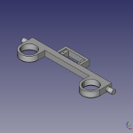

Piezas impresas
Las piezas pueden imprimirse tanto en PLA como en ABS. Con un 20% de relleno es suficiente.
| Imagen | Pieza(STL) |
|---|---|
soportes-laterales.stlNecesitas dos piezas simétricas. Ojo, no son iguales porque tienen un pequeño reborde que impide que el rodamiento se salga en caso de que haya cierta holgura. |
|
|  |
hombros.stlLos hombros se colocan entre los dos soportes laterales, y sostienen el servo que mueve las pinzas. Además dan soporte a los rodamientos en los que encajan los brazos |
brazos-xxx.stlLos brazos encajan en los rodamientos de los hombros. El brazo izquierdo tiene un hueco para alojar el servo que mueve la muñeca. |
|
soporte-grua-xxx.stlEsta pieza también aloja un servo, que es el que tira de la polea conectada a los hombros para permitir que los brazos suban y bajen. |
|
|
apoyo-grua.stl
1 Esta pieza esta atornillada en el hombro y enganchada al servo trasero. |
|
|
base-cuadrada.stl
1 Aquí se apoya el cubo. Tiene cuatro huecos para atornillarlo a la rueda dentada que engrana con el motor, y unos huecos para introducir las solapas que permiten girar una cara del cubo cuando los brazos están cerrados |
|
|
solapas-base.stl
4 Hay ocho huecos en la base cuadrada para estas piezas, aunque nosotros hemos comprobado que con cuatro es suficiente |
|
|
rueda-dentada-grande-xxxxx
4 Hay ocho huecos en la base cuadrada para estas piezas, aunque nosotros hemos comprobado que con cuatro es suficiente |
|
|
soporte-motor.stl
1 En esta pieza encaja nuestro motor y el rodamiento que aloja la rueda dentada grande |
|
|
capuchon-xxxxx.stl
1 En esta pieza encaja nuestro motor y el rodamiento que aloja la rueda dentada grande |
|
|
enganche-servo-pinza.stl
1 Pieza que facilita la unión del servo de la pinza con los brazos. Está pegada a la aspa del servo |
|
|
plaquitas-xxxxx
1 Pieza que facilita la unión del servo de la pinza con los brazos. Está pegada a la aspa del servo |
|
|
rueda-dentada-pequena.stl
1 Esta pieza encaja en el eje del motor, y engrana con la rueda dentada grande que mueve la base |
Vitaminas
Como también se dice en el mundo de las impresoras auto-replicantes (repraps), llamamos vitaminas a todas aquellas partes que NO SE PUEDEN IMPRIMIR y que hay que comprar
| Imagen | Nombre | Cantidad | Precio aprox | Tiendas | Comentarios |
|---|---|---|---|---|---|
| Rodamientos 8x22x7 | 6 | < 1 € | Hacen falta 6 rodamientos axiales. No es necesario que sean de muy buena calidad ya que no van a soportar grandes fuerzas. La referencia 8x22x7 se refiere a las medidas del rodamiento (diámetro del agujero, diámetro exterior y ancho). | ||
| Tornillos y tuercas M3 | Varios | < 1 € | Necesitas varios tornillos y tuercas M3. Puedes comprarlos en muchas ferreterías. Nosotros los utilizamos con cabeza hexagonal (para llaves allen). Si quieres comprar una buena cantidad, para futuros proyectos, rationalstock.es tiene buenos precios. | ||
| Base de madera | 1 | < 1 € | Utiliza cualquier trozo de madera (melamina, dmf...) para atornillar la estructura. La medida mínima es xxx aunque es preferible usar una algo más grande para dejar hueco para el arduino y futuras ampliaciones (una botonera, un display, un soporte para cámara web...) |
Electrónica
Además de esta lista de componentes necesitaras el típico material necesario para proyectos de este tipo (algo de cable, un soldador, estaño)...
| Imagen | Pieza(STL) | Cantidad | Comentarios |
|---|---|---|---|
| Arduino UNO | 1 | Podrás utilizar cualquier tipo de Arduino que tenga al menos siete salidas digitales (3 de ellas pwm). | |
| Motor paso a paso xxx | 1 | Este es un motor paso a paso bipolar que tiene la ventaja de que tiene muy poca altura. La referencia es pm35s-048-hpl2 | |
| Driver de motor basada en ULN2003 | 1 | Esta placa sirve de interface entre el arduino y el motor. | |
| Servos 9g | 3 | Necesitas 3 servos para la muñeca, las pinzas y la grúa | |
| Placa perforada (perfboard) | 3 | Necesitas 3 servos para la muñeca, las pinzas y la grúa | |
| Hilera de pines macho | 3 | Necesitas 3 servos para la muñeca, las pinzas y la grúa |
... y no te olvides del cubo de Rubik!
Evidentemente, el robot es mucho más divertido si tienes algo que pue pueda manejar. Necesitarás un cubo de competición. No sirven los cubos baratos que encuentras en jugueterías, e incluso es posible que un cubo original de Rubik sea demasiado recio para el robot.
De todos modos, no hay que preocuparse por el precio: los cubos de competición, que tengan un buen corte de esquinas son, de hecho, más baratos que el original.
Existen muchos modelos distintos, y para gustos se hicieron los colores. Nosotros utilizamos un Dayan ZhanChi stickerless.